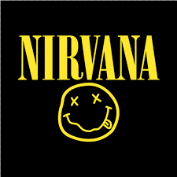

Nirvana fue una banda de grunge estadounidense procedente de Aberdeen, Washington, Estados Unidos fundada por el vocalista y guitarrista Kurt Cobain y el bajista Krist Novoselic en 1987. Desde su formación, Nirvana atravesó una serie de frecuentes cambios de baterista hasta que en 1990 se unió, de manera definitiva, el baterista Dave Grohl. Nirvana actualmente es considerada como una de las bandas más famosas, importantes e influyentes de la historia de la música, siendo considerada banda símbolo de una generación.
Nirvana fue una banda de grunge estadounidense procedente de Aberdeen, Washington, Estados Unidos fundada por el vocalista y guitarrista Kurt Cobain y el bajista Krist Novoselic en 1987. Desde su formación, Nirvana atravesó una serie de frecuentes cambios de baterista hasta que en 1990 se unió, de manera definitiva, el baterista Dave Grohl. Nirvana actualmente es considerada como una de las bandas más famosas, importantes e influyentes de la historia de la música, siendo considerada banda símbolo de una generación.
DISCOGRAFÍA DE ESTUDIO